Anurag Ghosh
I'm a Robotics PhD at Carnegie Mellon, advised by Srinivasa Narasimhan working on Computer Vision and Imaging problems. I was co-advised by Srinivasa Narasimhan and Christoph Mertz when I got my Masters here.
I spent a few wonderful years at Microsoft Research working at the intersection of Computer Vision and Networked/Distributed Systems for Social Good. I worked with Venkat Padmanabhan, Akshay Nambi and Tanuja Ganu.
Even earlier, I studied at a vibrant and beautiful research-focused school, IIIT Hyderabad. I was advised by C. V. Jawahar and we worked on problems involving Computer Vision for Sports.
Here's my Resume.
Open to opportunities: I'm on the industry job market. If you think we'd be a good fit,
let's chat!
Research
I love building intelligent systems that work to delight millions and hopefully, billions of users. I'm broadly interested in closing the perception-action loop for robotics in our extremely messy and beautiful open physical world, while remaining frugal, accessible, and deployable.
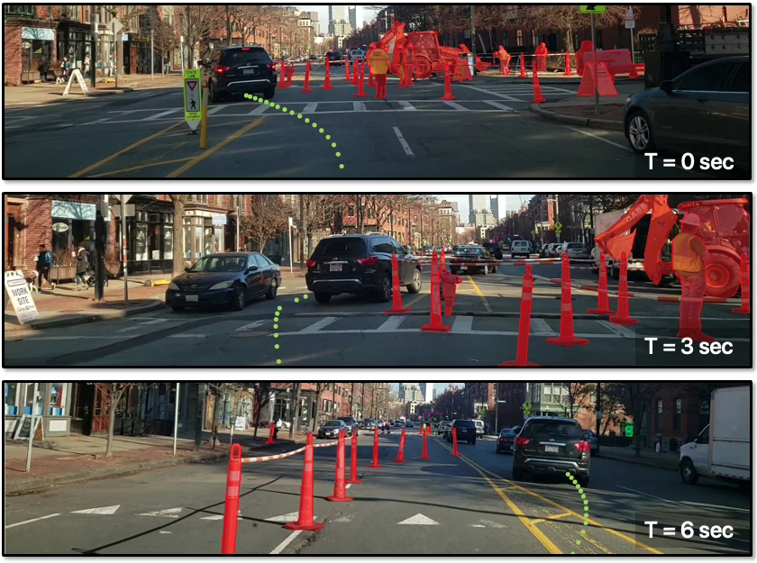
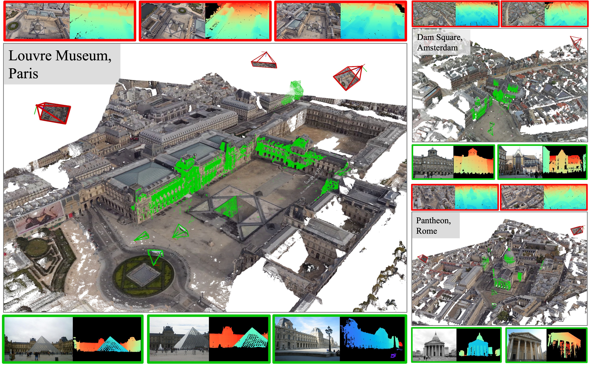
AerialMegaDepth: Learning Aerial-Ground Reconstruction and View Synthesis
Conference on Computer Vision and Pattern Recognition (CVPR), 2025
A scalable data generation framework that combines mesh-renderings with real images, enabling robust 3D reconstruction across extreme viewpoint variations (e.g., aerial-ground).
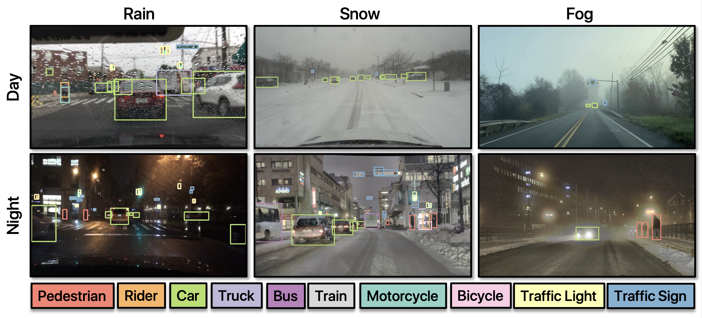
Saliency Guided Image Warping for Unsupervised Domain Adaptation
Winter Conference on Applications of Computer Vision (WACV), 2025
Oversample salient object regions by warping source-domain images in-place during training while performing domain adaptation. Improve adaptation across geographies, lighting and weather conditions, is agnostic to the task, domain adaptation algorithm, saliency guidance, and underlying model architecture.
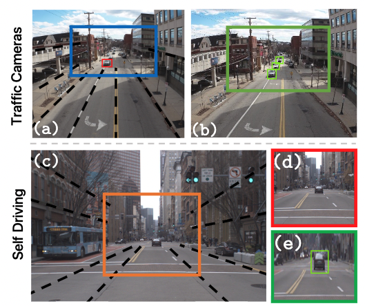
Learned Two-Plane Perspective Prior based Image Resampling for Efficient Object Detection
Conference on Computer Vision and Pattern Recognition (CVPR), 2023
A learnable geometry-guided prior that incorporates rough geometry of the 3D scene (a ground plane and a plane above) to resample the images for efficient object detection. This significantly improves small and far-away object detection performance while also being more efficient.
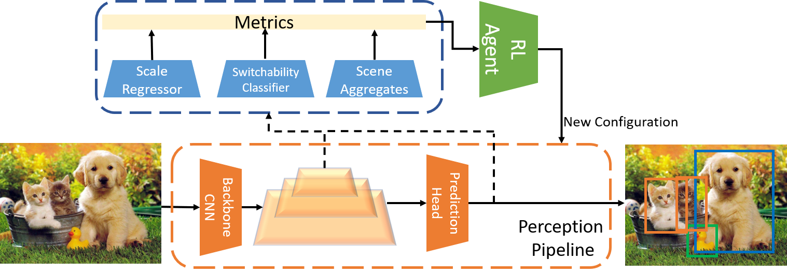
Chanakya: Learning Runtime Decisions for Adaptive Real-Time Perception
Conference on Neural Information Processing Systems (NeurIPS), 2023
Honorable Mention, Streaming Perception Challenge, CVPR 2021. Presentation at WAD
A learned execution framework that automatically balances accuracy and latency for real-time perception, outperforming static and dynamic policies on both server GPUs and edge devices.
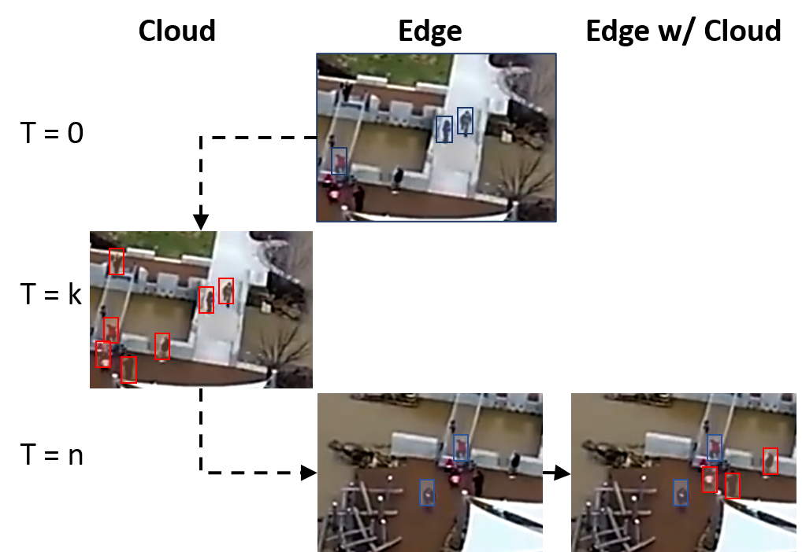
REACT: Streaming Video Analytics On The Edge With Asynchronous Cloud Support
International Conference on Internet of Things Design and Implementation (IoTDI), 2023
An edge-cloud fusion framework for video analytics that fuses edge and cloud predictions asynchronously, improving object detection accuracy by up to 50% over edge-only or cloud-only approaches.
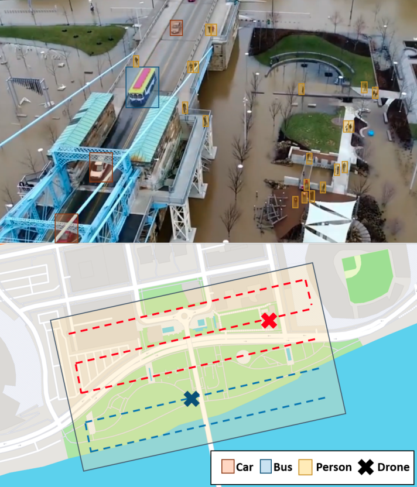
Holistic Energy Awareness for Intelligent Drones
International Conference on Systems for Energy-Efficient Built Environments (BuildSys), 2021
(Best Paper Runner-Up)
A holistic energy management framework for intelligent drones that jointly optimizes compute, communication, and flight energy. Also appeared in Transactions on Sensor Networks.
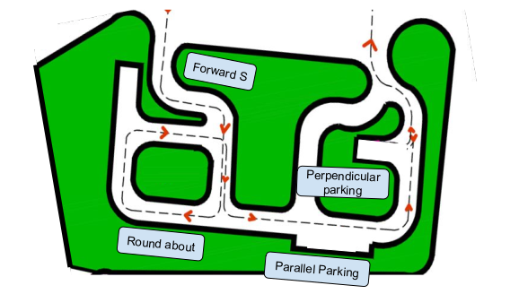
Smartphone-based Driver License Testing
Watch Microsoft CEO Satya Nadella explain the project!
Read about our work on PM Awards Innovations Coffee Table Book! (Extracted here)
Deployed in multiple states/10+ cities in India, automatically testing hundreds of thousands of drivers at a low-cost with >99% accuracy (test verified by human operator). See Overview and Dashboard.
Instead of prohibitively expensive (>150,000$) overhead pole-mounted camera infrastructure to estimate car trajectories and judge driver manuevers, we use sub-500$ smartphones and additionally get driver state monitoring for free (face verification, mirror scanning, distraction and seatbelt checks).
Relevant Publications
Smartphone-based Driver License Testing
Anurag Ghosh, Vijay Lingam, Ishit Mehta, Akshay Nambi, Venkat Padmanabhan, Satish Sangameswaran
Conference on Embedded Networked Sensor Systems (SenSys Demo), 2019
Anurag Ghosh, Vijay Lingam, Ishit Mehta, Akshay Nambi, Venkat Padmanabhan, Satish Sangameswaran
Conference on Embedded Networked Sensor Systems (SenSys Demo), 2019
ALT: Towards Automating Driver License Testing using Smartphones
Akshay Nambi, Ishit Mehta, Anurag Ghosh, Vijay Lingam, Venkat Padmanabhan
Conference on Embedded Networked Sensor Systems (SenSys), 2019
Akshay Nambi, Ishit Mehta, Anurag Ghosh, Vijay Lingam, Venkat Padmanabhan
Conference on Embedded Networked Sensor Systems (SenSys), 2019
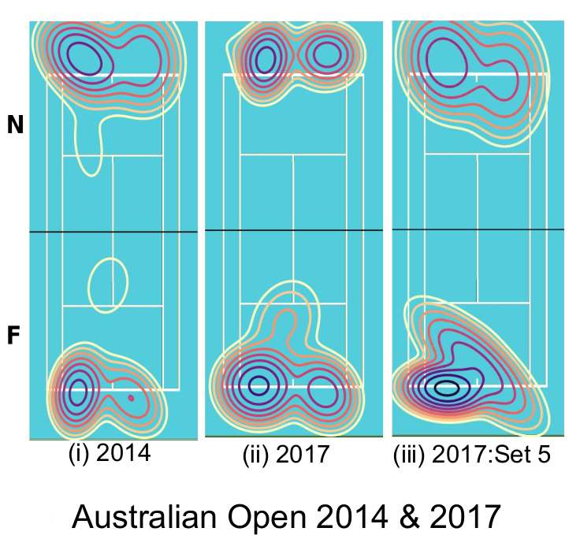
Analyzing Racket Sports From Broadcast Videos
IIIT Hyderabad (Master's Thesis), 2019
Consolidates our sports analytics work, and additionally includes tennis analytics for comparing the long-term playing styles and attributes of Federer, Nadal, and Djokovic from broadcast footage.
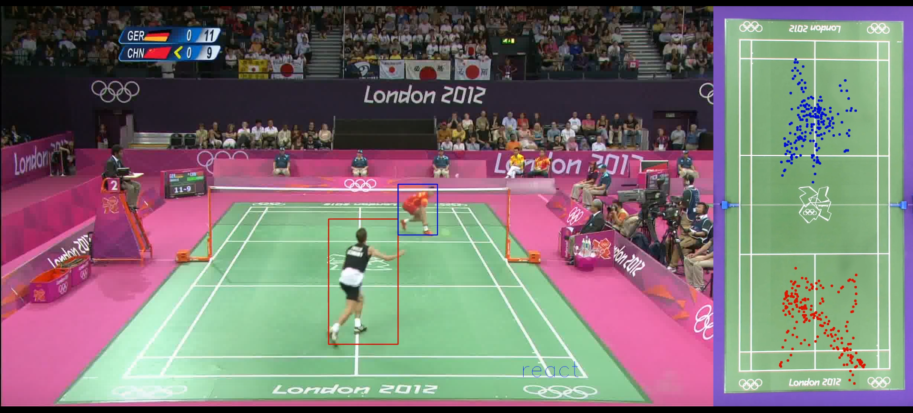
Towards Structured Analysis of Broadcast Badminton Videos
Winter Conference On Applications of Computer Vision (WACV), 2018
Piloted with ESPN/Star Sports at Premier Badminton League, watched by tens of millions in South East Asia.
An end-to-end framework for real-time player movement analysis from live broadcast badminton videos using only visual cues — computing on-court distance, speed, and heatmaps without multi-modal sensors.
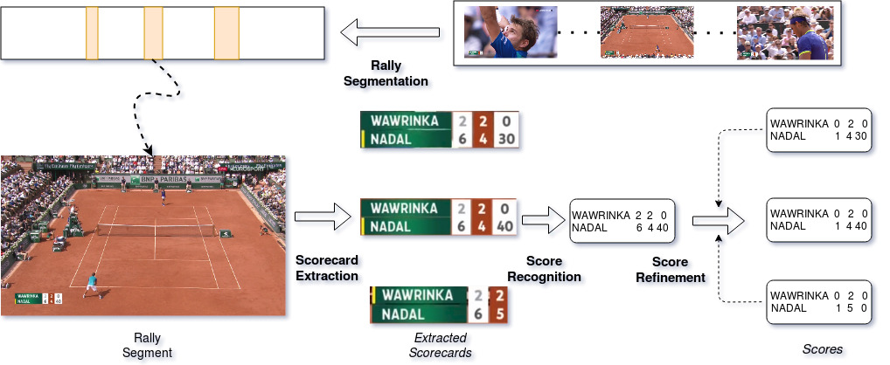
SmartTennisTV: An Automatic Indexing System for Tennis
National Conference on Computer Vision, Pattern Recognition, Image Processing and Graphics (NCVPRIPG), 2017
(Best Paper Award)
An automatic system for indexing and retrieving key events from broadcast tennis videos, enabling structured query-based access to match highlights.
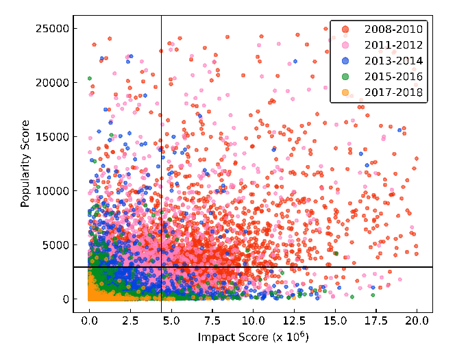
Signals Matter: Understanding Popularity and Impact on Stack Overflow
The Web Conference (WWW), 2019
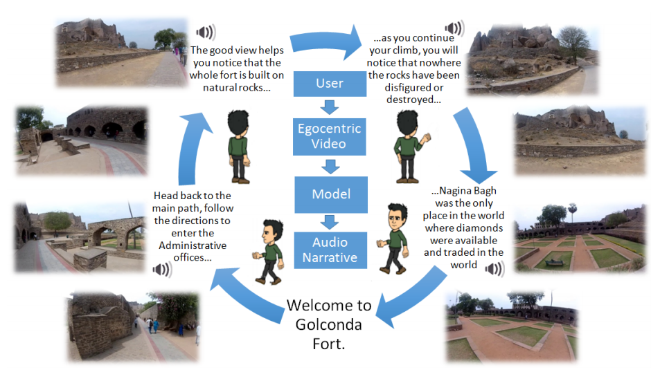
Dynamic narratives for heritage tour
VisArt Workshop, Europen Conference on Computer Vision (ECCV), 2016
Generating stories from vision before it was cool, building dynamic text narratives from egocentric heritage site videos.
Press
Interesting/Inspiring Links
- Making computer vision systems that work: Boujou, Kinect, HoloLens
- A New Kind of Science - A 15 Year View
- How I ran the length of every street in Pittsburgh: PAC TOM
- Frugal Innovations for a Developing World
- Hints and Principles for Computer System Design
- The Advent of Actionable Tennis Analytics
- Automatic Pool Stick vs Strangers